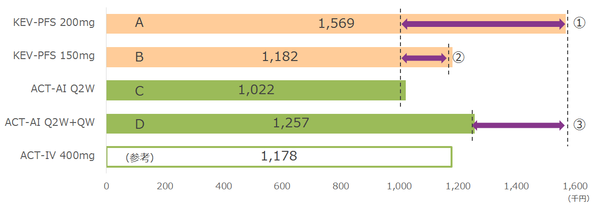

参考：KEVとの薬剤費比較（52週間）
・ACTはAI、KEVはPFSで試算
・QWは12週間、その後Q2Wに戻すとして試算

- ①A-C：基本量のKEV200mgはACT-Q2Wより55万円も高い
- ②B-C：減量用のKEV150mgでもACT-Q2Wより16万円高い
- ③A-D：QW追加でQ2W効果不十分を回避できて、しかもKEV200mgより31万円安い
ACTのKEVに対する価格優位性は確実に伝える